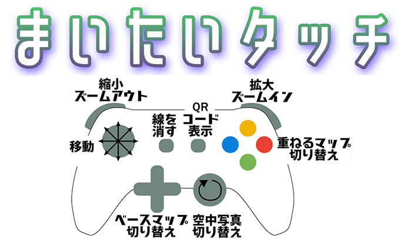

<!DOCTYPE html>
<html lang="ja">

<head>
  <meta http-equiv="Content-Type" content="text/html; charset=utf-8" />
  <meta name="viewport" content="width=device-width,initial-scale=1.0,user-scalable=no" />
  <title>まいたいタッチ 2019-1203</title>
  <!-- leaflet -->
  <link rel="stylesheet" href="https://unpkg.com/leaflet@1.5.1/dist/leaflet.css" integrity="sha512-xwE/Az9zrjBIphAcBb3F6JVqxf46+CDLwfLMHloNu6KEQCAWi6HcDUbeOfBIptF7tcCzusKFjFw2yuvEpDL9wQ==" crossorigin="" />
  <script src="https://unpkg.com/leaflet@1.5.1/dist/leaflet.js" integrity="sha512-GffPMF3RvMeYyc1LWMHtK8EbPv0iNZ8/oTtHPx9/cc2ILxQ+u905qIwdpULaqDkyBKgOaB57QTMg7ztg8Jm2Og==" crossorigin=""></script>
  <!-- import plugin for showing mesasge ballon-->
  <link rel="stylesheet" href="script/leaflet-messagebox.css" />
  <script src="script/leaflet-messagebox.js"></script>
  <!-- import plugin for making QR code-->
  <script src="https://ajax.googleapis.com/ajax/libs/jquery/3.4.1/jquery.min.js"></script>
  <script src="script/jquery.qrcode.min.js"></script>
  <!-- import plugin for drawing-->
  <script src="script/yubi.js"></script>
  <!-- 高度の色分け表示レイヤー-->
  <script src="script/demColor.js"></script>
  <!-- ゲームパッドのコントロール-->
  <script src="script/gamePadControler.js"></script>
  <!-- 各種地図レイヤーの定義-->
  <script src="script/layers.js"></script>
  <!--  QRコードに情報を渡すためのスクリプト -->
  <script src="script/makeKananeruLinkQR.js"></script>
</head>

<body onload="mam_draw_init();">
  <div class="candivwrapper">
    <div id="mapdiv" style="position:absolute; top:0px;left:0;right:0;bottom:0;z-index:900;"></div>
    <canvas id="can" width="1920px" height="1080px" style="position:absolute; top:0px;left:0;right:0;bottom:0;z-index:990;"></canvas>
  </div>

  <script>
    _highestDem = -100; //初期値としての最高標高値
    _lowestDem = 5000; //初期値としての最低標高値
    _totalTiles = 0; //計算するタイルの数
    _dislplayedTiles = ""; //チェック用の文字列
    _nowMove = false; //今マップが移動しているかどうか
    _nowDisasterArrayNum = 0; //災害表記のリスト番号
    _mySousaTime = new Date().getTime(); //何らかの操作が終わったタイミング
    _nowLayer = "";
    getMapLocation();

    var baseLayers = {
      "淡色地図": blank,
      "標準地図": std,
      "傾斜量図": keisya,
      "アナグリフ": anaglypLayer
    };

    var overlays = {
      "治水地形分類図": chisuiLayer,
      "標高": contourLayer,
      "明治時代の低湿地": meijiLayer
    };

    //var checkStr = document.getElementById("checkStr");

    //-------マップのイベント処理
    //動き開始処理
    map.on('movestart', function() {
      clearCan();
      contourLayer.remove(map);
      //whereIsThisMap();
      _dislplayedTiles = "";
      _highestDem = -100;
      _lowestDem = 5000;
    });

    //動き終了時
    map.on('moveend', function() {
      resetMySousaTime();
      if (map.hasLayer(std)) {
        _nowLayer = "標準地図";
      } else if (map.hasLayer(blank)) {
        _nowLayer = "淡色地図";
      } else if (map.hasLayer(keisya)) {
        _nowLayer = "傾斜量図";
      } else {
        _nowLayer = "アナグリフ";
      }
      showShortDialog("現在の状態", "表示されている地図は<br />" + _nowLayer + "で<br />ズームレベルは" + map.getZoom() + "です", 10000);
    });

    //ズーム開始処理
    map.on('zoomstart', function() {
      clearCan();
      contourLayer.remove(map);
      _highestDem = -100;
      _lowestDem = 5000;
      _nowMove = true;
    });

    //ズーム終了処理
    map.on('zoomend', function() {
      resetMySousaTime();
      if (map.getZoom() > 15 && map.hasLayer(keisya)) {
        showShortDialog("ズームイン", "傾斜量図はこの倍率だと表示できません", 2000);
        map.setZoom(15);
      } else if (map.getZoom() > 16 && map.hasLayer(anaglypLayer)) {
        showShortDialog("ズームイン", "アナグリフはこの倍率だと表示できません", 2000);
        map.setZoom(16);
      }
      whereIsThisMap();
    });

    $(document.body).bind("mousemove keypress whereIsThisMap", function(e) {
      resetMySousaTime();
    });

    function resetMySousaTime() {
      _mySousaTime = new Date().getTime();
    }

    function refresh() {
      if (new Date().getTime() - _mySousaTime >= 20000)
        showShortDialog("", "", 10000);
      else
        setTimeout(refresh, 10000);
    }
    setTimeout(refresh, 10000);
  </script>
</body>

</html>
